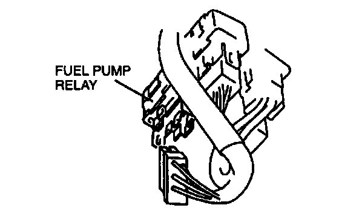
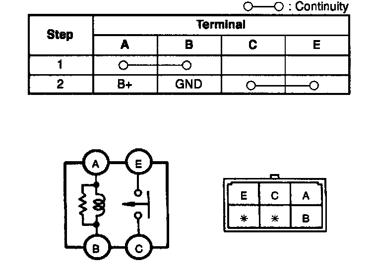
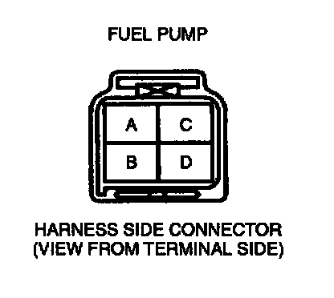
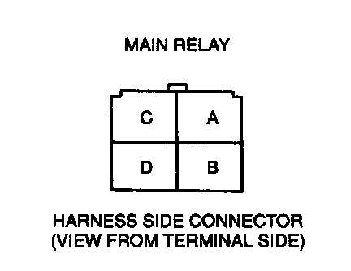

Continuity Inspection
NOTE: Perform the following test only when directed.1. Disconnect the negative battery cable.

2. Disconnect the fuel pump relay connector (6-pin type connector: 4 terminal) located above the accelerator pedal.

3. Inspect for continuity between the fuel pump relay terminals by using an ohmmeter.
4. If not as specified, replace the fuel pump relay. If as specified but the Simulation Test is failed, inspect following:
Fuel pump malfunction
Open circuit
- Ground circuit (Fuel pump relay connector terminal B and PCM connector terminal 3N)
- Ground circuit (Fuel pump relay connector terminal C and fuel pump connector terminal B through common connector)
- Power circuit (Fuel pump relay connector terminal A or E and main relay connector terminal D)

Fuel Pump

Main Relay
Short circuit
- Fuel pump relay connector terminal B and PCM connector terminal 3N to ground
- Fuel pump relay connector terminal C and fuel pump connector terminal B to ground
5. Connect the fuel pump relay connector.
6. Connect the negative battery cable.